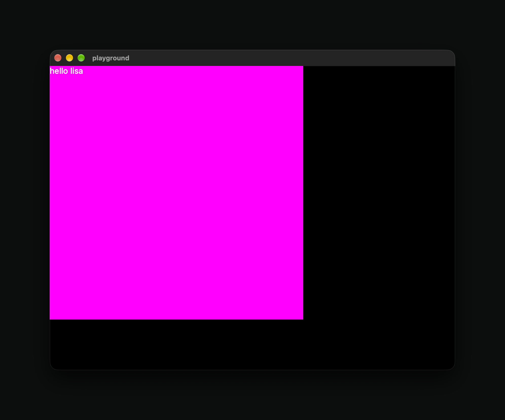
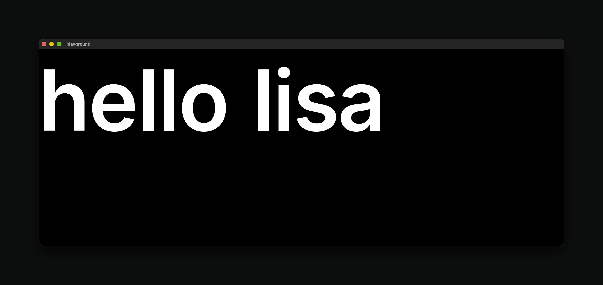

forbear log, entry 002: text, macOS and rectangles!
A week ago I wrote the first entry, about rewriting forbear from Zig in Jai.

Rectangles
This is the whole playground app right now:
backend: Backend;
window: Window;
#if OS == .LINUX {
init_wayland_egl_backend(*backend);
init_wayland_egl_window(*backend.connection, *window, 800, 600, "playground");
} else #if OS == .MACOS {
init_macos_gl_backend(*backend);
init_macos_gl_window(*backend, *window, 800, 600, "playground");
}
inter: Font;
init_font(*inter, INTER_TTF);
forbear: Forbear;
init_forbear(*forbear, *backend, Base_Style.{
font = *inter,
});
while window.running {
#if OS == .LINUX {
event, data, something := next_wayland_event(*backend.connection);
if something {
update_wayland_connection(*backend.connection, event, data);
update_wayland_egl_window(*backend.connection, *window, event, data);
}
} else #if OS == .MACOS {
update_macos_gl_backend(*backend);
update_macos_gl_window(*backend, *window);
}
element(Style.{
width = fixed(500),
height = fixed(500),
background = color(rgb(255, 0, 255)),
color = rgb(255, 255, 255),
}, #code {
text("hello lisa");
});
render_and_reset_node_tree(*window, rgb(0.0, 0.0, 0.0));
reset_temporary_storage();
}If you knew how the code looked for the Zig version you can already see it's much simpler, and this already solves some of the problems that I was facing there.
The children are passed as #code, and element is a macro (#expand), so the body runs right where it's written, with no closures and no callbacks.
Keying works through #caller_location. In jai, a function can take location := #caller_location, which gives me the file, line and column of the call. I hash those, and a few more things around the runtime context and that's the key:
if key.count > 0 {
node.key = fnv1a_hash(key.data, key.count);
} else {
// we use the caller location here
node.key = fnv1a_hash(location.fully_pathed_filename.data, location.fully_pathed_filename.count);
node.key = fnv1a_hash(cast(u64) location.line_number, node.key);
node.key = fnv1a_hash(cast(u64) location.character_number, node.key);
}
if context.forbear.scope_stack.count > 0 {
node.key = fnv1a_hash(context.forbear.scope_stack[context.forbear.scope_stack.count - 1], node.key);
}
node.key = fnv1a_hash(cast(u64) context.forbear.parent_stack.count, node.key);This really makes me full much safer about the long-term for this code. But, it doesn't really improve in another pain point that I had with the previous API which was with components. In the ideal world, the user can just define a function and call the function for the component, but that can't work because, in a React-like API, state needs to be tied to the component somehow which means it needs to have some real place to be. The other point is that the caller location is not enough to distinguish between different instances of the same element on differente instances of a component.
Like the previous version, nodes live in one flat array. Each node points to its parent, children and siblings by index into the flat array. This is fully based on the idea from this awesome interview in Wookash's Podcast with Anton Mikhailov
Text

Overall, the text architecture is the same as we had in the Zig version, with the exception of the runs paradigm that I started to implement there and felt was too complicated that I still need to figure out a better alternative for.
There are two libraries involved: freetype, kb_text_shape. kb_text_shape is a simpler replacement for harfbuzz, which is simpler and more sane to work with. Freetype loads in the font, and kb_text_shape (also checkout this amazing talk from the creator of this library).
The process is slightly involved. But, in simple terms:
- load the font, and setup our libraries with it
- create our texture atlas on a single texture (a single texture is important because other methods aren't actually supported for older OpenGL versions)
- shape the incoming text with kb_text_shape and store it in our nodes
- finally when rendering, gather the glyph instances that are going to be drawn looking up on the texture atlas from a hash table cache, or rasterized on the spot with freetype
I think the most interesting part about this is that I found out that we can fill out a VBO with pretty much any data that's not actually vertex data and then we can just infer the vertex data when instance drawing. This simplified lots of what was my first try of using OpenGL in forbear.
Node_Draw_Instance :: struct {
position: Vector2;
size: Vector2;
color: Vector4;
};
glVertexAttribPointer(0, 2, GL_FLOAT, GL_FALSE, stride, cast(*void) 0);
glVertexAttribDivisor(0, 1);
// ... same for size and color
glDrawArraysInstanced(GL_TRIANGLES, 0, 6, xx node_instances.count);layout(location = 0) in vec2 position;
layout(location = 1) in vec2 size;
layout(location = 2) in vec4 color;
const vec2 corners[6] = vec2[](
vec2(0, 0), vec2(1, 0), vec2(0, 1),
vec2(0, 1), vec2(1, 0), vec2(1, 1)
);
void main() {
vec2 corner = corners[gl_VertexID];
v_color = color;
gl_Position = vec4((position.xy + corner * size.xy) / viewport * 2.0 - 1.0, 0.0, 1.0);
gl_Position.y = -gl_Position.y;
}macOS
Creating a window and an OpenGL context is plain Jai calling Objective-C, and the Jai bindings make it really, really simple:
window.ns_window = NSWindow.initWithContentRect(
objc_alloc(NSWindow),
rectangle,
NSWindowStyleMaskTitled | NSWindowStyleMaskClosable | NSWindowStyleMaskMiniaturizable | NSWindowStyleMaskResizable,
NSBackingStoreBuffered,
NO,
NSScreen.mainScreen()
);
NSWindow.setTitle(window.ns_window, title);
NSWindow.makeKeyAndOrderFront(window.ns_window, null);In Zig, this would have been objc_msgSend casts by hand for every call. Though these exist in Jai, the bindings make it much easier.
Now, I plan to start working on the beginnings of what will be forbear rendering from JSX..